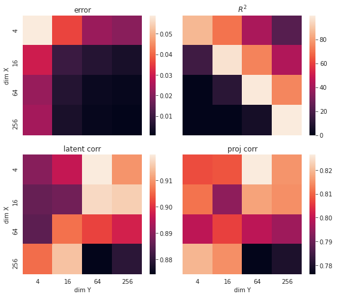
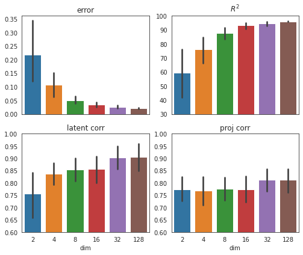
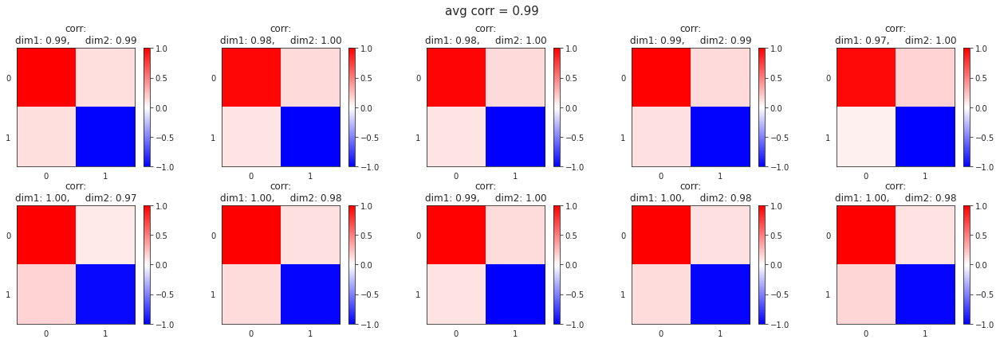
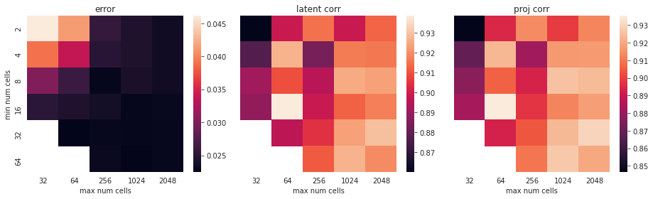
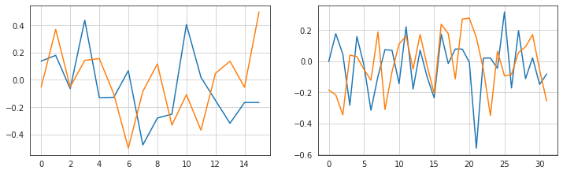
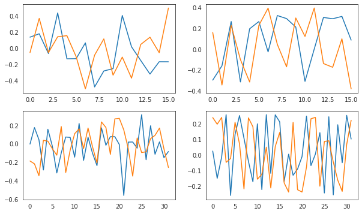
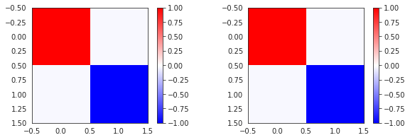

January, 10th 2020¶
Motivation: Simulation to understand Partial Least Squares (PLS) and Canonical Correlation Analysis CCA.
Result: These methods detect the shared, low-dimensional latent signal in linear, simulated data.
# HIDE CODE
# imports
import os
import sys
import h5py
import pickle
import random
import numpy as np
import pandas as pd
from os.path import join as pjoin
from copy import deepcopy as dc
from tqdm.notebook import tqdm
from collections import Counter
import matplotlib.pyplot as plt
import seaborn as sns
sns.set_style('whitegrid')
github_path = pjoin(os.environ['HOME'], 'Dropbox/git/A1ToneDiscrimination/')
sys.path.insert(0, github_path)
from utils.process import *
from utils.generic_utils import *
from utils.plot_functions import *
import warnings
warnings.filterwarnings('ignore', category=RuntimeWarning)
import rcca
from sklearn.linear_model import LogisticRegression
from sklearn.metrics import balanced_accuracy_score, matthews_corrcoef, f1_score
SEED = 42
np.random.seed(SEED)
random.seed(SEED)
# load data
# dirs_dict = get_dirs()
Random projection to higher dim space¶
from tqdm.notebook import tqdm
from scipy import spatial
from scipy.stats import pearsonr
from numpy.linalg import norm
from sklearn.metrics import r2_score
from sklearn.preprocessing import normalize
# --------------------------- plotting functions ---------------------------
def visualize_pls_results(pls, sim, verbose: bool = False):
_print_sim_info(sim, verbose)
avg_latent_corrs, pred_r2 = _plot_latent_retreival(pls, sim, verbose)
avg_proj_corrs = _plot_similarity_matrix(pls, sim, verbose)
avg_error = _print_results(pls, sim, verbose)
results = {
'latent_corr': avg_latent_corrs,
'proj_corr': avg_proj_corrs,
'error': avg_error,
'pred_r2': pred_r2,
}
return results
def _print_sim_info(sim, verbose):
if not verbose:
return
metadata = sim['metadata']
msg = 'Simulation info:\n\n'
msg += 'num samples:\t{:.0e},\nnoise sigma:\t{:.1f},\ndim Z:\t{:d},\ndim X:\t{:d},\ndim Y:\t{:d}'
msg = msg.format(
metadata['n_samples'],
metadata['sigma'],
metadata['dim_z'],
metadata['dim_x'],
metadata['dim_y'],)
print(msg)
print('\n\n')
def _plot_latent_retreival(pls, sim, verbose):
T, U = pls.transform(sim['x_test'], sim['y_test'])
y_pred = pls.predict(sim['x_test'])
pred_r2 = r2_score(sim['y_test'], y_pred, multioutput='raw_values') * 100
pred_r2 = np.maximum(0.0, pred_r2).mean()
dim_z = sim['metadata']['dim_z']
x_indxs, y_indxs = {}, {}
for i in range(dim_z):
current_x_idx = i
current_y_idx = i
current_x_corr = 0.0
current_y_corr = 0.0
for j in range(dim_z):
_corr_x = abs(pearsonr(sim['z_test'][:, i], T[:, j])[0])
_corr_y = abs(pearsonr(sim['z_test'][:, i], U[:, j])[0])
if _corr_x > current_x_corr:
current_x_corr = _corr_x
current_x_idx = j
if _corr_y > current_y_corr:
current_y_corr = _corr_y
current_y_idx = j
x_indxs[i] = current_x_idx
y_indxs[i] = current_y_idx
for i in range(dim_z):
if pearsonr(T[:, x_indxs[i]], sim['z_test'][:, i])[0] < 0.0:
T[:, x_indxs[i]] *= -1
if pearsonr(U[:, y_indxs[i]], sim['z_test'][:, i])[0] < 0.0:
U[:, y_indxs[i]] *= -1
if verbose:
sns.set_style('whitegrid')
plt.figure(figsize=(12, 6))
plt.subplot(121)
plt.plot(T[:30, x_indxs[0]], label='X')
plt.plot(U[:30, y_indxs[0]], label='Y')
plt.plot(sim['z_test'][:30, 0], 'k--', lw=2, label='true')
plt.xlabel('samples')
plt.title('1st dim')
plt.subplot(122)
plt.plot(T[:30, x_indxs[1]], label='X')
plt.plot(U[:30, y_indxs[1]], label='Y')
plt.plot(sim['z_test'][:30, 1], 'k--', lw=2, label='true')
plt.xlabel('samples')
plt.title('2nd dim')
msg = 'correlation with source signal:\n'
msg += 'X --> 1st dim: {:.2f} , 2nd dim: {:.2f}\n'
msg += 'Y --> 1st dim: {:.2f} , 2nd dim: {:.2f}\n\n'
msg += 'percent variance of Y explained (predicted useing X): {:.0f} {:s}\n\n'
msg += 'figure showing latent and retreived signals over a few samples\n'
msg = msg.format(
pearsonr(T[:, x_indxs[0]], sim['z_test'][:, 0])[0],
pearsonr(T[:, x_indxs[1]], sim['z_test'][:, 1])[0],
pearsonr(U[:, y_indxs[0]], sim['z_test'][:, 0])[0],
pearsonr(U[:, y_indxs[1]], sim['z_test'][:, 1])[0],
pred_r2, '%',
)
plt.suptitle(msg, fontsize=15)
plt.legend()
plt.tight_layout()
plt.show()
print('\n\n')
corrs_x = [pearsonr(T[:, x_indxs[i]], sim['z_test'][:, i])[0] for i in range(dim_z)]
corrs_y = [pearsonr(U[:, y_indxs[i]], sim['z_test'][:, i])[0] for i in range(dim_z)]
return np.mean(corrs_x + corrs_y), pred_r2
def _plot_similarity_matrix(pls, sim, verbose):
dim_z = sim['metadata']['dim_z']
cos_sim_x = np.zeros((dim_z, dim_z))
cos_sim_y = np.zeros((dim_z, dim_z))
for i in range(dim_z):
for j in range(dim_z):
cos_sim_x[i, j] = cos_similarity(sim['P'][:, i], pls.x_loadings_[:, j])
cos_sim_y[i, j] = cos_similarity(sim['Q'][:, i], pls.y_loadings_[:, j])
if verbose:
sns.set_style('white')
plt.figure(figsize=(6, 3))
plt.subplot(121)
plt.imshow(cos_sim_x, cmap='bwr', vmin=-1, vmax=1)
plt.xticks(range(dim_z))
plt.yticks(range(dim_z))
plt.title('X')
plt.colorbar()
plt.subplot(122)
plt.imshow(cos_sim_y, cmap='bwr', vmin=-1, vmax=1)
plt.xticks(range(dim_z))
plt.yticks(range(dim_z))
plt.title('Y')
plt.colorbar()
msg = 'cosine similarity between true and retreived projection vectors\n'
msg += 'rows correspond to true, and columns correspond to retreived\n'
msg += 'i.e. element $ij$ means cos sim between $P_i$ and $j$-th retreived loading vector'
plt.suptitle(msg, fontsize=15)
plt.tight_layout()
plt.show()
print('matrix values:\n\nX:\n{}\n\nY:\n{}'.format(cos_sim_x, cos_sim_y))
print('\n\n')
avg_corr_x = np.max(np.abs(cos_sim_x), axis=0).mean()
avg_corr_y = np.max(np.abs(cos_sim_y), axis=0).mean()
return np.mean([avg_corr_x, avg_corr_y])
def _print_results(pls, sim, verbose):
dim_y = sim['y_test'].shape[1]
test_corrs = np.zeros(dim_y)
y_pred = pls.predict(sim['x_test'])
for j in range(dim_y):
r, p_val = pearsonr(y_pred[:, j], sim['y_test'][:, j])
test_corrs[j] = r
error = 1 - np.mean(test_corrs)
if verbose:
msg = 'Angle between true projection vectors:\n'
msg += 'X: {:.1f} degrees, Y: {:.1f} degrees\n\n'
msg += 'Angle between retreived loading vectors:\n'
msg += 'X: {:.1f} degrees, Y: {:.1f} degrees\n\n'
msg += 'error = 1 - mean correlation between true and predicted (Y predicted from X):\n'
msg += 'error = {:.2e}'
msg = msg.format(
np.rad2deg(np.arccos(cos_similarity(sim['P'][:, 0], sim['P'][:, 1]))),
np.rad2deg(np.arccos(cos_similarity(sim['Q'][:, 0], sim['Q'][:, 1]))),
np.rad2deg(np.arccos(cos_similarity(pls.x_loadings_[:, 0], pls.x_loadings_[:, 1]))),
np.rad2deg(np.arccos(cos_similarity(pls.y_loadings_[:, 0], pls.y_loadings_[:, 1]))),
error,)
print(msg)
return error
# --------------------------- sim functions ---------------------------
def cos_similarity(I, II):
return 1 - spatial.distance.cosine(I, II)
def orthonormalize(x):
a = x[:, 0]
b = x[:, 1]
b_orth = b - (np.dot(a, b) / np.dot(a, a)) * a
x_orth = np.array([a, b_orth]).T
return normalize(x_orth, axis=0)
def get_source_signal(n_samples, rng=None):
if rng is None:
rng = np.random.RandomState(42)
thetas = rng.choice(np.arange(360), size=n_samples, replace=True)
thetas = np.deg2rad(thetas)
z_train = np.array([np.cos(thetas), np.sin(thetas)]).T
thetas = rng.choice(np.arange(360), size=n_samples, replace=True)
thetas = np.deg2rad(thetas)
z_test = np.array([np.cos(thetas), np.sin(thetas)]).T
return z_train, z_test
def create_pls_simulation(
z_train=None,
z_test=None,
n_samples: int = int(1e3),
dim_x: int = 16,
dim_y: int = 8,
sigma: float = 0.0,
orthonormal: bool = False,
seed: int = 42,):
rng = np.random.RandomState(seed)
if z_train is None or z_test is None:
z_train, z_test = get_source_signal(n_samples, rng)
P = rng.randn(dim_x, 2)
Q = rng.randn(dim_y, 2)
if orthonormal:
P, Q = tuple(map(orthonormalize, [P, Q]))
E = rng.randn(n_samples, dim_x) * sigma
F = rng.randn(n_samples, dim_y) * sigma
x_train = z_train @ P.T + E
y_train = z_train @ Q.T + F
x_test = z_test @ P.T + E
y_test = z_test @ Q.T + F
metadata = {
'n_samples': n_samples,
'dim_z': 2,
'dim_x': dim_x,
'dim_y': dim_y,
'sigma': sigma,
'orthonormal': orthonormal,
'seed': seed,
}
output = {
'x_train': x_train,
'x_test': x_test,
'y_train': y_train,
'y_test': y_test,
'z_train': z_train,
'z_test': z_test,
'P': P,
'Q': Q,
'E': E,
'F': F,
'metadata': metadata,
}
return output
def create_cca_simulation(
z_train=None,
z_test=None,
num_expts: int = 32,
min_num_cells: int = 16,
max_num_cells: int = 128,
n_samples: int = int(1e3),
sigma: float = 0.1,
seed: int = 42,):
rng = np.random.RandomState(seed)
if z_train is None or z_test is None:
z_train, z_test = get_source_signal(n_samples, rng)
dims = rng.choice(range(min_num_cells, max_num_cells), size=num_expts, replace=True)
proj_mats = [rng.randn(d, 2) for d in dims]
x_train = [z_train @ P.T + rng.randn(n_samples, d) * sigma for P, d in zip(proj_mats, dims)]
x_test = [z_test @ P.T + rng.randn(n_samples, d) * sigma for P, d in zip(proj_mats, dims)]
metadata = {
'n_samples': n_samples,
'dim_z': 2,
'num_expts': num_expts,
'min_num_cells': min_num_cells,
'max_num_cells': max_num_cells,
'dims': dims,
'sigma': sigma,
'seed': seed,
}
output = {
'x_train': x_train,
'x_test': x_test,
'z_train': z_train,
'z_test': z_test,
'proj_mats': proj_mats,
'metadata': metadata,
}
return output
SIM¶
n_samples = int(1e3)
dim_x, dim_y = 8, 8
sigma = 0.0
sim = create_pls_simulation(
n_samples=n_samples,
dim_x=dim_x,
dim_y=dim_y,
sigma=sigma,
orthonormal=False,
seed=SEED,
)
PLS¶
from sklearn.cross_decomposition import PLSCanonical
pls = PLSCanonical(
n_components=2,
scale=True,
algorithm='svd',
max_iter=int(1e9),
tol=1e-15,
).fit(sim['x_train'], sim['y_train'])
results = visualize_pls_results(pls, sim, verbose=True)
Simulation info:
num samples: 1e+03,
noise sigma: 0.0,
dim Z: 2,
dim X: 8,
dim Y: 8
matrix values:
X:
[[ 0.73326892 0.64281982]
[-0.7850375 0.2824664 ]]
Y:
[[ 0.36070002 0.81290917]
[-0.86790911 0.28814885]]
Angle between true projection vectors:
X: 118.4 degrees, Y: 100.4 degrees
Angle between retreived loading vectors:
X: 81.3 degrees, Y: 98.8 degrees
error = 1 - mean correlation between true and predicted (Y predicted from X):
error = 2.09e-02
results
{'latent_corr': 0.8749135560441331,
'proj_corr': 0.7771689023019858,
'error': 0.020937563698197437,
'pred_r2': 95.78312218503963}
LOOP¶
from tqdm.notebook import tqdm
start = 1
stop = 4
dims = np.logspace(start, stop, num=stop-start+1, base=4, dtype=int)
dims
array([ 4, 16, 64, 256])
n_samples = int(1e5)
n_seeds = 30
sigma = 0.0
orthogonal = False
z_train, z_test = get_source_signal(n_samples)
df = pd.DataFrame()
for seed in tqdm([int(2 ** i) for i in range(n_seeds)]):
for dim_x in tqdm(dims, leave=False):
for dim_y in tqdm(dims, leave=False):
# create sim
sim = create_pls_simulation(
z_train=z_train,
z_test=z_test,
n_samples=n_samples,
dim_x=dim_x,
dim_y=dim_y,
sigma=sigma,
orthonormal=orthogonal,
seed=seed,
)
# fit PLS
pls = PLSCanonical(
n_components=2,
scale=True,
algorithm='svd',
max_iter=int(1e9),
tol=1e-15,
).fit(sim['x_train'], sim['y_train'])
# get results
results = visualize_pls_results(pls, sim, verbose=False)
results.update(
{'seed': seed,
'dim_x': dim_x,
'dim_y': dim_y,
'n_samples': n_samples,
'sigma': sigma,
'orthogonal': orthogonal,
})
results = {k: [v] for k, v in results.items()}
df = pd.concat([df, pd.DataFrame.from_dict(results)])
df = reset_df(df)
errors = np.zeros((len(dims), len(dims)))
pred_r2s = np.zeros((len(dims), len(dims)))
latent_corrs = np.zeros((len(dims), len(dims)))
proj_corrs = np.zeros((len(dims), len(dims)))
for i, dim_x in enumerate(dims):
for j, dim_y in enumerate(dims):
selected_df = df.loc[(df.dim_x == dim_x) & (df.dim_y == dim_y)]
errors[i, j] = selected_df.error.mean()
pred_r2s[i, j] = selected_df.pred_r2.mean()
latent_corrs[i, j] = selected_df.latent_corr.mean()
proj_corrs[i, j] = selected_df.proj_corr.mean()
fig, axes = plt.subplots(2, 2, figsize=(8, 7), sharex='all', sharey='all')
sns.heatmap(errors, xticklabels=dims, yticklabels=dims, ax=axes[0, 0])
sns.heatmap(pred_r2s, xticklabels=dims, yticklabels=dims, ax=axes[0, 1])
sns.heatmap(latent_corrs, xticklabels=dims, yticklabels=dims, ax=axes[1, 0])
sns.heatmap(proj_corrs, xticklabels=dims, yticklabels=dims, ax=axes[1, 1])
axes[0, 0].set_title('error')
axes[0, 1].set_title('$R^2$')
axes[1, 0].set_title('latent corr')
axes[1, 1].set_title('proj corr')
axes[0, 0].set_ylabel('dim X')
axes[1, 0].set_ylabel('dim X')
axes[1, 0].set_xlabel('dim Y')
axes[1, 1].set_xlabel('dim Y')
fig.tight_layout()
plt.show()

n_seeds = 30
seeds = [int(2 ** i) for i in range(n_seeds)]
num_samples = np.logspace(1, 4, num=4, dtype=int)
sigma = 0.1
dim_x = 4
dim_y = 8
orthogonal = False
df = pd.DataFrame()
for n_samples in tqdm(num_samples):
for seed in tqdm(seeds, leave=False):
# create sim
sim = create_pls_simulation(
n_samples=n_samples,
dim_x=dim_x,
dim_y=dim_y,
sigma=sigma,
orthonormal=orthogonal,
seed=seed,
)
# fit PLS
pls = PLSCanonical(
n_components=2,
scale=True,
algorithm='svd',
max_iter=int(1e9),
tol=1e-15,
).fit(sim['x_train'], sim['y_train'])
# get results
results = visualize_pls_results(pls, sim, verbose=False)
results.update(
{'seed': seed,
'dim': dim,
'n_samples': n_samples,
'sigma': sigma,
'orthogonal': orthogonal,
})
results = {k: [v] for k, v in results.items()}
df = pd.concat([df, pd.DataFrame.from_dict(results)])
df = reset_df(df)
sns.barplot(x='n_samples', y='pred_r2', data=df)
<AxesSubplot:xlabel='n_samples', ylabel='pred_r2'>
n_seeds = 10
seeds = [int(2 ** i) for i in range(n_seeds)]
n_samples = int(1e2)
# num_samples = np.logspace(1, 4, num=4, dtype=int)
sigma = 0.1
orthogonal = False
df = pd.DataFrame()
for dim_x in tqdm([2, 4, 8, 16, 32, 128]):
for seed in tqdm(seeds, leave=False):
# create sim
dim_y = dim_x
sim = create_pls_simulation(
n_samples=n_samples,
dim_x=dim_x,
dim_y=dim_y,
sigma=sigma,
orthonormal=orthogonal,
seed=seed,
)
# fit PLS
pls = PLSCanonical(
n_components=2,
scale=True,
algorithm='svd',
max_iter=int(1e9),
tol=1e-15,
).fit(sim['x_train'], sim['y_train'])
# get results
results = visualize_pls_results(pls, sim, verbose=False)
results.update(
{'seed': seed,
'dim': dim_x,
'n_samples': n_samples,
'sigma': sigma,
'orthogonal': orthogonal,
})
results = {k: [v] for k, v in results.items()}
df = pd.concat([df, pd.DataFrame.from_dict(results)])
df = reset_df(df)
fig, axes = plt.subplots(2, 2, figsize=(7, 6), sharex='all')
sns.barplot(x='dim', y='error', data=df, ax=axes[0, 0])
sns.barplot(x='dim', y='pred_r2', data=df, ax=axes[0, 1])
sns.barplot(x='dim', y='latent_corr', data=df, ax=axes[1, 0])
sns.barplot(x='dim', y='proj_corr', data=df, ax=axes[1, 1])
axes[0, 1].set_ylim(30, 100)
axes[1, 0].set_ylim(0.6, 1.0)
axes[1, 1].set_ylim(0.6, 1.0)
axes[0, 0].set_title('error')
axes[0, 1].set_title('$R^2$')
axes[1, 0].set_title('latent corr')
axes[1, 1].set_title('proj corr')
axes[0, 0].set_xlabel('')
axes[0, 1].set_xlabel('')
axes[1, 0].set_xlabel('dim')
axes[1, 1].set_xlabel('dim')
axes[0, 0].set_ylabel('')
axes[0, 1].set_ylabel('')
axes[1, 0].set_ylabel('')
axes[1, 1].set_ylabel('')
fig.tight_layout()
plt.show()

CCA¶
import rcca
sim = create_cca_simulation(
num_expts=10,
min_num_cells=16,
max_num_cells=128,
n_samples=int(1e2),
sigma=0.2,
seed=42,)
cca = rcca.CCA(kernelcca=True, ktype='linear', reg=0.1, numCC=2)
cca.train(sim['x_train'])
Training CCA, kernel = linear, regularization = 0.1000, 2 components
<rcca.CCA at 0x7fdd6b34b2b0>
testcorrs = cca.validate(sim['x_test'])
mean_corr = np.mean([item.mean() for item in testcorrs])
error = 1 - mean_corr
mean_corr
0.9331603516950004
plt.figure(figsize=(18, 6))
corrs_all = []
for c in range(10):
cos_sim = np.zeros((2, 2))
for i in range(2):
for j in range(2):
cos_sim[i, j] = cos_similarity(sim['proj_mats'][c][:, i], cca.ws[c][:, j])
_corrs = np.max(np.abs(cos_sim), axis=0)
corrs_all.append(np.mean(_corrs))
plt.subplot(2, 5, c+1)
plt.imshow(cos_sim, cmap='bwr', vmin=-1, vmax=1)
plt.xticks(range(2))
plt.yticks(range(2))
plt.colorbar()
msg = 'corr:\ndim1: {:.2f}, dim2: {:.2f}'
msg = msg.format(*_corrs)
plt.title(msg)
plt.suptitle('avg corr = {:.2f}'.format(np.mean(corrs_all)), fontsize=15)
plt.tight_layout()
plt.show()

a = sim['proj_mats'][c]
b = cca.ws[c]
plt.plot(normalize(a)[:, 0])
plt.plot(normalize(b)[:, 0], 'r--')
[<matplotlib.lines.Line2D at 0x7fdd69742eb0>]
plt.figure(figsize=(10, 3))
plt.subplot(121)
for c in cca.comps:
plt.plot(c[:30, 0])
plt.subplot(122)
plt.plot(sim['z_train'][:30, 1], c='k')
[<matplotlib.lines.Line2D at 0x7fddf44aff10>]
c = 3
pearsonr(sim['z_train'][:, 1], cca.comps[c][:, 1])[0]
-0.5288430574211993
sim = create_cca_simulation(
num_expts=10,
min_num_cells=16,
max_num_cells=128,
n_samples=int(1e2),
sigma=0.2,
seed=42,)
cca = rcca.CCA(kernelcca=True, ktype='linear', reg=0.1, numCC=2)
cca.train(sim['x_train'])
LOOP¶
n_seeds = 20
seeds = [int(2 ** i) for i in range(n_seeds)]
n_samples = int(1e2)
sigma = 0.1
min_ncs = [2, 4, 8, 16, 32, 64]
max_ncs = [32, 64, 256, 1024, 2048]
df = pd.DataFrame()
for seed in tqdm(seeds):
z_train, z_test = get_source_signal(n_samples, np.random.RandomState(seed))
for min_num_cells in tqdm(min_ncs, leave=False):
for max_num_cells in tqdm([item for item in max_ncs if item > min_num_cells], leave=False):
# create sim
sim = create_cca_simulation(
z_train=z_train,
z_test=z_test,
num_expts=10,
min_num_cells=min_num_cells,
max_num_cells=max_num_cells,
n_samples=n_samples,
sigma=sigma,
seed=seed,
)
# fit cca
cca = rcca.CCA(kernelcca=True, ktype='linear', reg=0.1, numCC=2, verbose=False)
cca.train(sim['x_train'])
# get avg error
testcorrs = cca.validate(sim['x_test'])
mean_corr = np.mean([item.mean() for item in testcorrs])
error = 1 - mean_corr
# get avg proj corr
corrs_all = []
for c in range(10):
cos_sim = np.zeros((2, 2))
for i in range(2):
for j in range(2):
cos_sim[i, j] = cos_similarity(sim['proj_mats'][c][:, i], cca.ws[c][:, j])
_corrs = np.max(np.abs(cos_sim), axis=0)
corrs_all.append(np.mean(_corrs))
avg_proj_corr = np.mean(corrs_all)
# get avg latent corr
latent_corrs = []
for comp in cca.comps:
_corrs = np.abs(
[pearsonr(sim['z_train'][:, i], comp[:, j])[0]
for i in range(2) for j in range(2)]
)
_idxs = np.argsort(_corrs)
latent_corrs.append(np.mean(_corrs[_idxs[-2:]]))
avg_latent_corr = np.mean(latent_corrs)
results = {
'seed': [seed],
'error': [error],
'proj_corr': [avg_proj_corr],
'latent_corr': [avg_latent_corr],
'min_num_cells': [min_num_cells],
'max_num_cells': [max_num_cells],
}
df = pd.concat([df, pd.DataFrame.from_dict(results)])
df = reset_df(df)
errors = np.zeros((len(min_ncs), len(max_ncs)))
latent_corrs = np.zeros((len(min_ncs), len(max_ncs)))
proj_corrs = np.zeros((len(min_ncs), len(max_ncs)))
for i, min_num_cells in enumerate(min_ncs):
for j, max_num_cells in enumerate(max_ncs):
selected_df = df.loc[(df.min_num_cells == min_num_cells) & (df.max_num_cells == max_num_cells)]
errors[i, j] = selected_df.error.mean()
latent_corrs[i, j] = selected_df.latent_corr.mean()
proj_corrs[i, j] = selected_df.proj_corr.mean()
fig, axes = plt.subplots(1, 3, figsize=(13, 4), sharex='all', sharey='all')
sns.heatmap(errors, xticklabels=max_ncs, yticklabels=min_ncs, ax=axes[0])
sns.heatmap(latent_corrs, xticklabels=max_ncs, yticklabels=min_ncs, ax=axes[1])
sns.heatmap(proj_corrs, xticklabels=max_ncs, yticklabels=min_ncs, ax=axes[2])
axes[0].set_title('error')
axes[1].set_title('latent corr')
axes[2].set_title('proj corr')
axes[0].set_ylabel('min num cells')
axes[0].set_xlabel('max num cells')
axes[1].set_xlabel('max num cells')
axes[2].set_xlabel('max num cells')
fig.tight_layout()
plt.show()

n_seeds = 20
seeds = [int(2 ** i) for i in range(n_seeds)]
n_samples = int(1e2)
sigma = 0.1
num_expts = [5, 10, 15, 20, 25, 30, 25]
min_ncs = [2, 64]
max_ncs = [32, 1024]
df = pd.DataFrame()
for seed in tqdm(seeds):
z_train, z_test = get_source_signal(n_samples, np.random.RandomState(seed))
for min_num_cells in tqdm(min_ncs, leave=False):
for max_num_cells in tqdm([item for item in max_ncs if item > min_num_cells], leave=False):
for num_expt in tqdm(num_expts, leave=False):
# create sim
sim = create_cca_simulation(
z_train=z_train,
z_test=z_test,
num_expts=num_expt,
min_num_cells=min_num_cells,
max_num_cells=max_num_cells,
n_samples=n_samples,
sigma=sigma,
seed=seed,
)
# fit cca
cca = rcca.CCA(kernelcca=True, ktype='linear', reg=0.1, numCC=2, verbose=False)
cca.train(sim['x_train'])
# get avg error
testcorrs = cca.validate(sim['x_test'])
mean_corr = np.mean([item.mean() for item in testcorrs])
error = 1 - mean_corr
# get avg proj corr
corrs_all = []
for c in range(num_expt):
cos_sim = np.zeros((2, 2))
for i in range(2):
for j in range(2):
cos_sim[i, j] = cos_similarity(sim['proj_mats'][c][:, i], cca.ws[c][:, j])
_corrs = np.max(np.abs(cos_sim), axis=0)
corrs_all.append(np.mean(_corrs))
avg_proj_corr = np.mean(corrs_all)
# get avg latent corr
latent_corrs = []
for comp in cca.comps:
_corrs = np.abs(
[pearsonr(sim['z_train'][:, i], comp[:, j])[0]
for i in range(2) for j in range(2)]
)
_idxs = np.argsort(_corrs)
latent_corrs.append(np.mean(_corrs[_idxs[-2:]]))
avg_latent_corr = np.mean(latent_corrs)
results = {
'seed': [seed],
'error': [error],
'proj_corr': [avg_proj_corr],
'latent_corr': [avg_latent_corr],
'min_num_cells': [min_num_cells],
'max_num_cells': [max_num_cells],
'num_expts': [num_expt],
}
df = pd.concat([df, pd.DataFrame.from_dict(results)])
df = reset_df(df)
min_ncs = [2, 64]
max_ncs = [32, 1024]
selected_df = df.loc[(df.min_num_cells == 2) & (df.max_num_cells == 32)]
selected_df = df.loc[(df.min_num_cells == 64) & (df.max_num_cells == 1024)]
sns.barplot(data=selected_df, x='num_expts', y='latent_corr')
<AxesSubplot:xlabel='num_expts', ylabel='latent_corr'>
df
| seed | error | proj_corr | latent_corr | min_num_cells | max_num_cells | num_expts | |
|---|---|---|---|---|---|---|---|
| 0 | 1 | 0.039396 | 0.837462 | 0.861658 | 2 | 32 | 5 |
| 1 | 1 | 0.090387 | 0.937068 | 0.933139 | 2 | 32 | 10 |
| 2 | 1 | 0.131916 | 0.984571 | 0.963220 | 2 | 32 | 15 |
| 3 | 1 | 0.088203 | 0.961541 | 0.964669 | 2 | 32 | 20 |
| 4 | 1 | 0.099902 | 0.976318 | 0.978408 | 2 | 32 | 25 |
| ... | ... | ... | ... | ... | ... | ... | ... |
| 415 | 524288 | 0.022374 | 0.964073 | 0.962613 | 64 | 1024 | 15 |
| 416 | 524288 | 0.023422 | 0.959549 | 0.958306 | 64 | 1024 | 20 |
| 417 | 524288 | 0.022446 | 0.957551 | 0.956151 | 64 | 1024 | 25 |
| 418 | 524288 | 0.023268 | 0.955034 | 0.953940 | 64 | 1024 | 30 |
| 419 | 524288 | 0.022446 | 0.957551 | 0.956151 | 64 | 1024 | 25 |
420 rows × 7 columns
PLS¶
dim_x, dim_y = 16, 32
sigma_x, sigma_y = 0.0, 0.0
P = np.random.randn(dim_x, 2)
#P[:, 1] = np.cross(P[:, [0]], P[:, [1]])
Q = np.random.randn(dim_y, 2)
P, Q = tuple(map(orthogonalize, [P, Q]))
E = np.random.randn(n_samples, dim_x) * sigma_x
F = np.random.randn(n_samples, dim_y) * sigma_y
x = z @ P.T + E
y = z @ Q.T + F
x_test = z_test @ P.T + E
y_test = z_test @ Q.T + F
plt.figure(figsize=(12, 3.5))
plt.subplot(121)
plt.plot(P)
plt.grid()
plt.subplot(122)
plt.plot(Q)
plt.grid()
plt.show()

from scipy import spatial
I = P[:, 0]
II = P[:, 1]
cos_sim = 1 - spatial.distance.cosine(I, II)
print(norm(P, axis=0), cos_sim)
[1. 1.] 0.0
I = Q[:, 0]
II = Q[:, 1]
cos_sim = 1 - spatial.distance.cosine(I, II)
print(norm(Q, axis=0), cos_sim)
[1. 1.] 0.0
from sklearn.cross_decomposition import PLSCanonical
pls = PLSCanonical(
n_components=2,
scale=True,
algorithm='svd',
max_iter=50000,
tol=1e-15,
).fit(x, y)
T, U = pls.transform(x, y)
pls.score(x_test, y_test)
0.8992261519138769
plt.plot(T[:50, 0])
plt.plot(U[:50, 0])
[<matplotlib.lines.Line2D at 0x7f8040a3f700>]
plt.plot(z[:50, 0])
[<matplotlib.lines.Line2D at 0x7f804098ba90>]
from scipy import spatial
dataSetI = T[:, 0]
dataSetII = U[:, 0]
result = 1 - spatial.distance.cosine(dataSetI, dataSetII)
result
0.9998251824586186
plt.figure(figsize=(10, 6))
plt.subplot(221)
plt.plot(P)
plt.subplot(222)
plt.plot(pls.x_loadings_)
plt.subplot(223)
plt.plot(Q)
plt.subplot(224)
plt.plot(pls.y_loadings_)
plt.show()

from scipy import spatial
I = Q[:, 0]
II = Q[:, 1]
result = 1 - spatial.distance.cosine(I, II)
result
0.0
I = pls.y_loadings_[:, 0]
II = pls.y_loadings_[:, 1]
result = 1 - spatial.distance.cosine(I, II)
result
0.02049339683389928
np.rad2deg(np.arccos(result))
88.82573264908198
CCA¶
import rcca
cca = rcca.CCA(kernelcca=True, ktype='linear', reg=1.0, numCC=2)
cca.train([x, y])
Training CCA, kernel = linear, regularization = 1.0000, 2 components
<rcca.CCA at 0x7f80409c0fd0>
testcorrs = cca.validate([x_test, y_test])
testcorrs
[array([0.99975779, 0.99949445, 0.99716948, 0.99742545, 0.99714784,
0.99717948, 0.99876482, 0.99822929, 0.99966171, 0.99843138,
0.99998712, 0.99920971, 0.9999271 , 0.99960872, 0.99742675,
0.99770802]),
array([0.99999595, 0.99744655, 0.99968608, 0.99991307, 0.99961767,
0.9983968 , 0.99874959, 0.99793154, 0.99922509, 0.99750652,
0.99786734, 0.9975504 , 0.99918006, 0.99866182, 0.99911243,
0.99733046, 0.99749114, 0.99982285, 0.99757084, 0.99930094,
0.99995306, 0.99955876, 0.99865336, 0.99990081, 0.99748978,
0.99945325, 0.99827828, 0.99921284, 0.99775211, 0.99990282,
0.99882347, 0.99910412])]
plt.figure(figsize=(8, 3))
plt.subplot(121)
plt.plot(P)
plt.subplot(122)
plt.plot(cca.ws[0])
[<matplotlib.lines.Line2D at 0x7f8040e30f40>,
<matplotlib.lines.Line2D at 0x7f8040e30460>]
cos_sim1 = np.zeros((2, 2))
cos_sim2 = np.zeros((2, 2))
for i in range(2):
for j in range(2):
cos_sim1[i, j] = 1 - spatial.distance.cosine(P[:, i], cca.ws[0][:, j])
cos_sim2[i, j] = 1 - spatial.distance.cosine(Q[:, i], cca.ws[1][:, j])
plt.figure(figsize=(10, 3))
plt.subplot(121)
plt.imshow(cos_sim1, cmap='bwr', vmin=-1, vmax=1)
plt.colorbar()
plt.subplot(122)
plt.imshow(cos_sim2, cmap='bwr', vmin=-1, vmax=1)
plt.colorbar()
plt.show()

plt.figure(figsize=(10, 3))
plt.subplot(121)
plt.plot(cca.comps[0][:30, 0])
plt.plot(cca.comps[1][:30, 0])
plt.subplot(122)
plt.plot(z[:30, 0], c='k')
[<matplotlib.lines.Line2D at 0x7f8040027040>]
ev = cca.compute_ev([x_test, y_test])
Computing explained variance for component #1
Computing explained variance for component #2
ev[0].shape, ev[1].shape
((2, 16), (2, 32))
ev[1]
array([[1.01537745e+01, 2.76303264e+00, 2.18239931e+00, 1.82606643e+00,
1.02492607e+01, 1.06713083e+02, 9.47814630e-01, 6.32696381e+00,
2.55511789e+00, 3.36492603e+01, 7.95345892e+00, 2.59705831e+00,
7.04632180e+00, 9.03207947e+00, 2.66228865e+01, 1.65859692e+00,
2.41670421e+00, 1.08852991e+01, 1.62943797e+01, 3.35113271e+00,
4.18856926e+00, 5.88190957e-01, 1.13878382e+02, 2.26422827e+00,
5.39300889e+01, 1.02262549e+00, 6.68381947e+00, 5.61154725e+00,
1.35268682e+01, 1.14934829e+01, 1.05210942e+01, 3.65258525e+00],
[7.52514068e+00, 2.52449027e+00, 8.41069580e-01, 3.45467625e+00,
1.35541443e+01, 1.07011761e+02, 2.03125643e+00, 5.46966949e+00,
1.31869702e+00, 3.51328153e+01, 8.80014754e+00, 3.28578212e+00,
9.45738258e+00, 7.96380661e+00, 3.12726584e+01, 2.03367785e+00,
2.26489055e+00, 8.48137908e+00, 1.59210771e+01, 2.30377728e+00,
2.34235868e+00, 7.77923546e-02, 1.12756618e+02, 8.04649047e-01,
5.48560692e+01, 2.12439953e+00, 8.37688320e+00, 7.81753338e+00,
1.46124664e+01, 9.35026391e+00, 1.31185932e+01, 2.65805633e+00]])